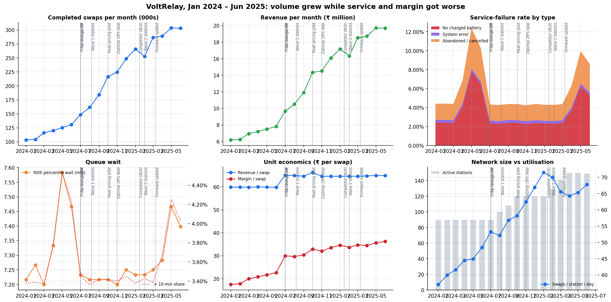
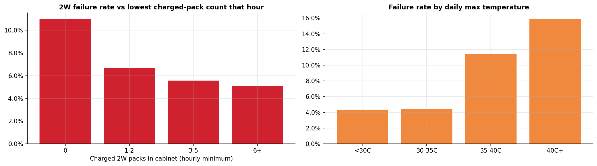
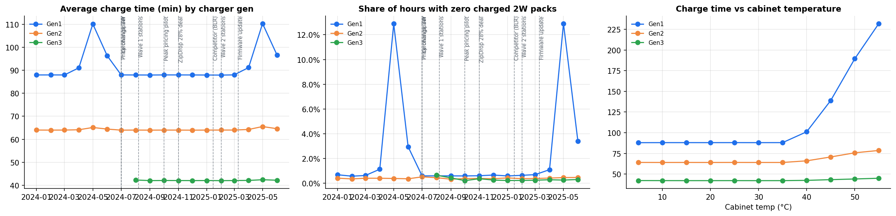
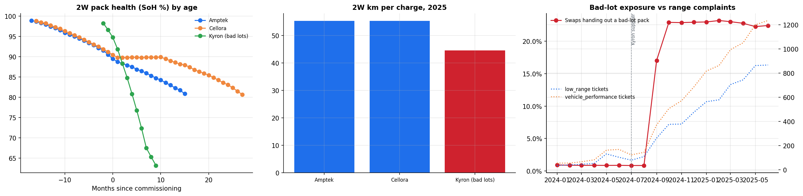
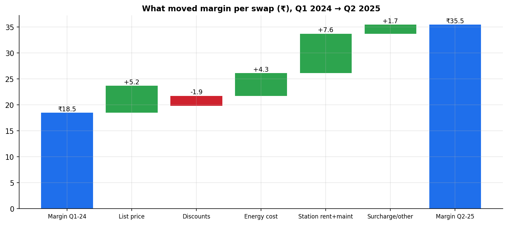
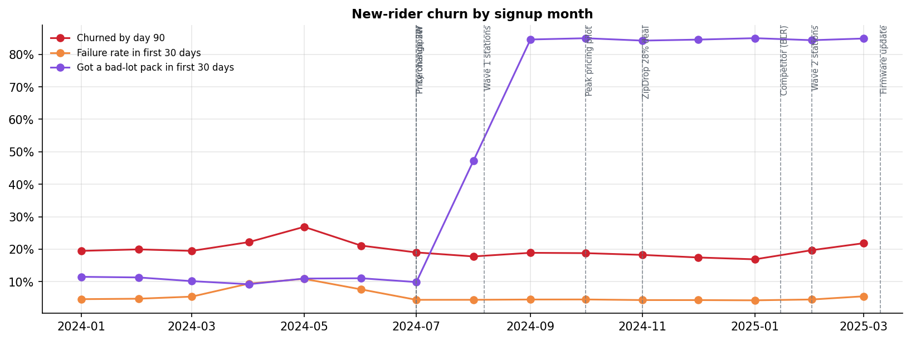

Root-cause analysis · Jan 2024 – Jun 2025 · 3.81M swap attempts · 150 stations · 6 cities
Data Analytics Hackathon · Gradient Learnings
Key numbers, Jan 2024 – Jun 2025 (volume and failures: Q1-24 vs Q2-25 monthly averages)
6 suspects: 2 expansion waves · price rise · peak pricing · new battery supplier · new fleet contract. Method: compare exposed and unexposed segments over the same months, after cleaning 35 data issues (test stations, duplicates, sensor errors, 15 extra city spellings, mis-tagged tickets).
2Failure rate hits 12.4% (May-24) and 10.0% (May-25), and stays near 4.3% in between. Riders fail because no charged battery is available, not because of queues.

3



| First-month failed swaps | Churned by day 90 |
|---|---|
| 0–5% | 10.7% |
| 5–10% | 18.4% |
| 10–20% | 26.0% |
| over 20% | 39.5% |
Secondary: 3W riders, partner-onboarded riders, Gen1 home station.
Not drivers: bad batteries, competitor, tickets.

| # | Action | Evidence and expected effect |
|---|---|---|
| 1 | Replace Gen1 chargers with Gen3, starting with 36 stations in Jaipur, Hyderabad and Delhi, before Apr-26. Cooling and higher pack targets in the meantime. | 12.7% vs 5.1% failure to summer failure ~8.3% to ~5.8%, about 25k fewer failed swaps per summer quarter |
| 2 | Claim recall costs from Kyron; capacity-test every new lot before deployment | ₹4.79 crore at stake; catch a bad lot in weeks, not 11 months |
| 3 | Renegotiate ZipDrop: 12% base, extra discount only for off-peak swaps; reinstate the peak surcharge | Recover up to ~₹55 lakh a year and move peak load |
| 4 | Protect new riders' first 30 days: steer to Gen2/3 stations, live pack counts in the app, auto-credit after a failure | Churn 10.7% vs 39.5% depending on early failures |
| 5 | Sharpen peak pricing to the real crunch hours; add 3W slots | Keep the +₹7.8/swap, actually shift demand |
Don't spend on: more expansion to fix service, firmware/connectivity projects, or a competitor response. None of these showed an effect.
9